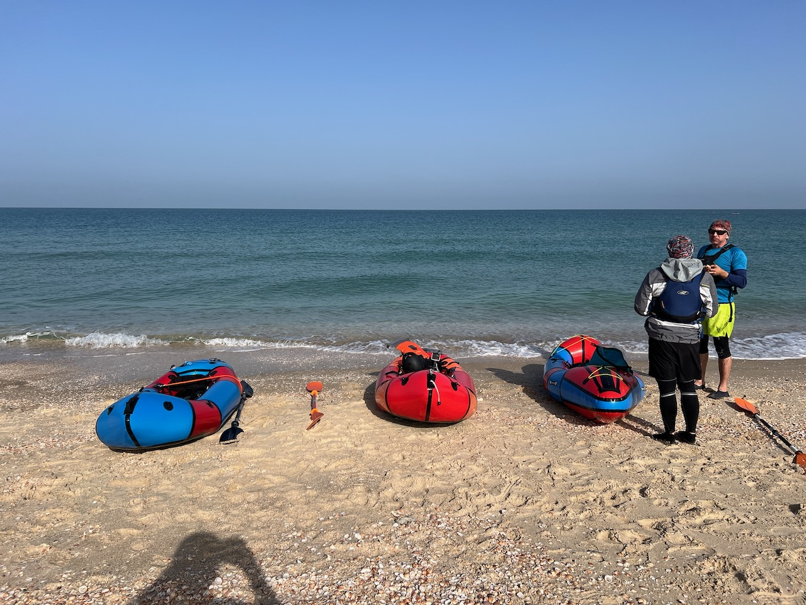
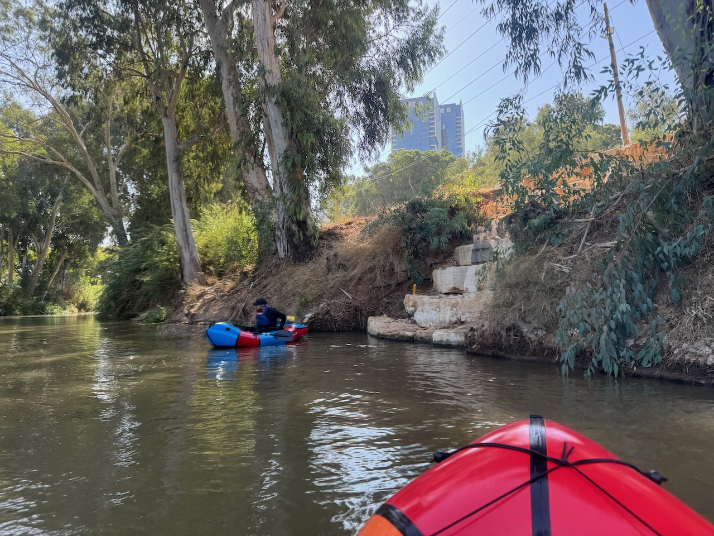
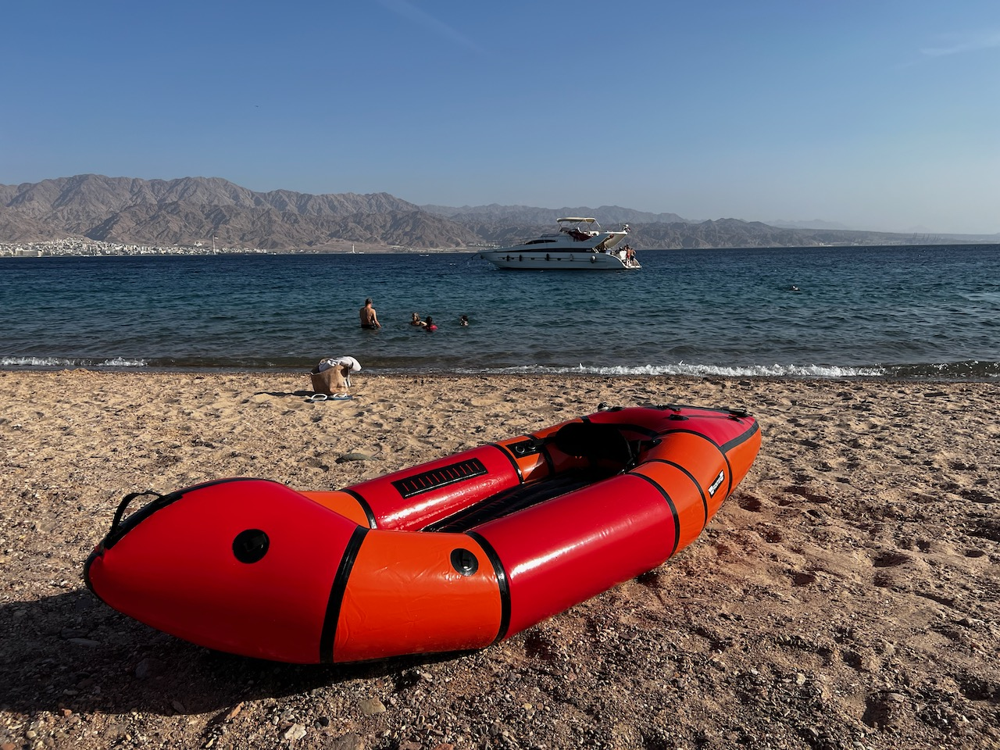
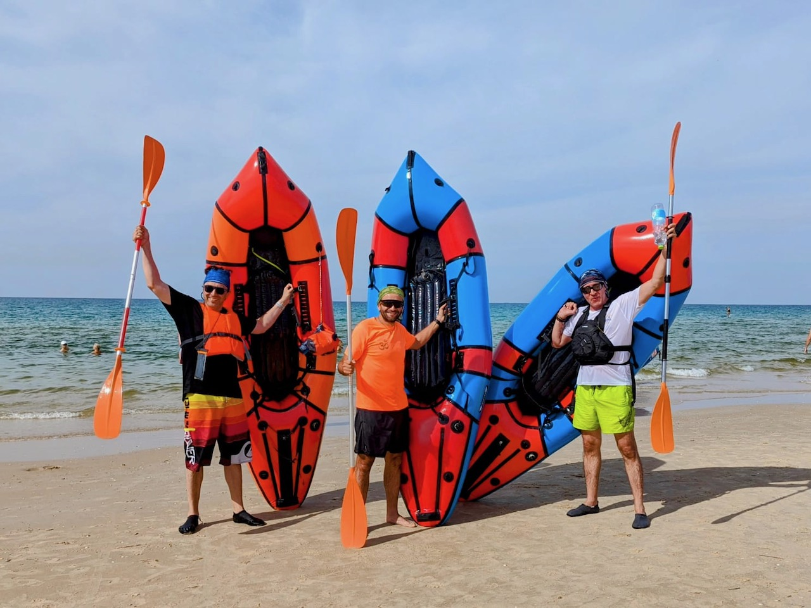

פקרפטינג משלב פעילות גופנית, חקר הטבע וטיולים במים. הבסיס שלו הוא סירה
מתנפחת קלה, קומפקטית ורב-שימושית, פקרפט, שניתן לשאת בקלות בתרמיל.

קלות וקומפקטיות – היתרונות העיקריים של הפקרפט.
יתרונות הפקרפטינג
קומפקטיות וניידות: פקרפטים שוקלים רק 2-5 ק"ג.
רב-שימושיות: מתאים לנהרות, אגמים וימים.
ידידותי לסביבה: לא דורש דלק, לא מזהם את הסביבה.
נגישות: מתאים לכולם, ללא קשר לרמת הניסיון.

פקרפטינג בנהר: שלווה ויופי של הטבע.
איפה אפשר לעשות פקרפטינג?
ישראל היא מקום מצוין לפקרפטינג. הנהרות, האגמים והחופים שלה מציעים
מגוון נופים:
נהרות: למשל, הירדן והבניאס.
אגמים: הכנרת.
חופי ים: הים התיכון והים האדום.

פקרפט בים האדום: חוויה ימית מיוחדת.
הרגישו את הריגוש של הפקרפטינג איתנו!
אנחנו צוות של חובבי טבע, נהרות, אגמים, ים וכמובן - אדרנלין!
packraft.co.il הוא קהילה של אנשים שחולקים תשוקה משותפת, מוכנים לחקור
את המים של ישראל יחד איתכם. אנו מציעים הרפתקאות מרגשות לכל מי שרוצה
לאתגר את עצמו ולגלות את יופי הטבע מפרספקטיבה חדשה ומרגשת.

הסיפור שלנו
הכל התחיל במסע שיט של 120 ק"מ בנהרות ואגמים של קרליה, ברפטינג וקיאקים
גדולים. אחר כך היה קורס בקיאק ים. וכמו שאתם כבר מנחשים, רכשנו את
הפקרפטים שלנו. עברנו דרך מפלים רבים, חקרנו מפרצים נסתרים וחופים
ציוריים, ועכשיו אנחנו רוצים לחלוק את החוויה הזו איתכם. packraft.co.il
הוא התוצאה של החלום שלנו להפוך את הפקרפטינג לנגיש לכל מי שמחפש
הרפתקאות אמיתיות.